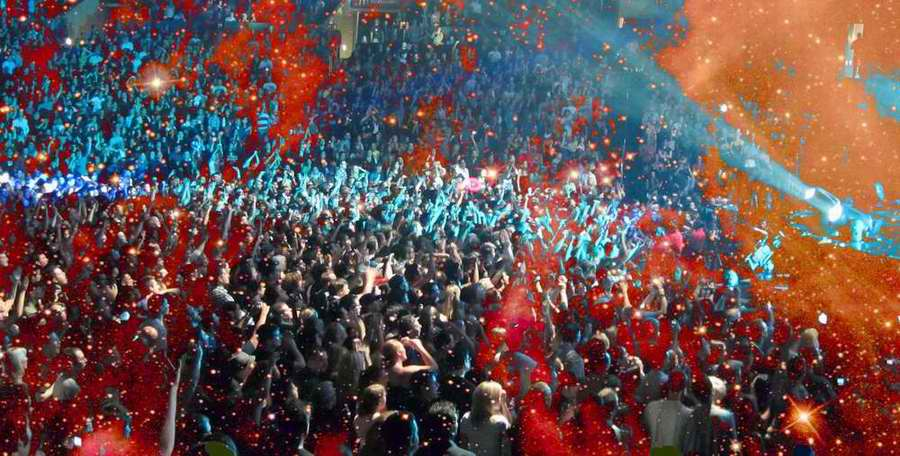

МЕЧТА ХУДОЖНИКА. Тимур Хуснутдинов
Тимур Хуснутдинов: однажды во сне я услышал музыку, которую, как музыкант, я не могу воспроизвести.
Эфраим Калиш: Тимур, что значит для тебя – быть художником перед Богом?
Тимур Хуснутдинов: я мечтаю вот о чем: я однажды слышал во сне музыку, которую, как музыкант, я не могу воспроизвести. Я не слышал подобной музыки на земле и не могу понять, что это за ритмику я слышал, и что за ноты?
Эфраим Калиш: что это была за музыка?
Тимур Хуснутдинов: она была красивая, но это было нечто...
В общем я видел сон, в моей жизни было несколько таких снов (три или четыре), которые меня потрясли.
И это был один из таких снов: я оказался в видео-студии. Мне говорят: иди сюда! Подводят, садят за стол. Передо мной монитор. И я сажусь так вот, как я сейчас с тобой разговариваю, одеваю наушники. Включают монитор и я вижу некую картину: колоссальный, типа ледового, дворец и там может тысячи людей водят огромный хоровод. И с небе какие-то хоругви и большие знамена. И звучит вот эта музыка. И у меня было ощущение, что эта музыка откуда-то из глубокой древности. И это было подобно той истории, когда Саул встретил сонм пророческий и пророки играли, и он тоже стал пророчествовать. И в этом была потрясающая глубина из древности. Я не могу этого передать. Но я просто начал рыдать там, в этом сне.
Я к чему это рассказываю: у меня, как музыканта, есть мечта – сыграть на Земле звуки, соединения нот, мелодий, которые звучат где-то на Небе у трона, там на небесах, в другом измерении. Но пока мне это не удается.
Что значит для меня быть художником пред Богом – это попытаться взять эти небесные созвучия и низвести их на землю, воспроизвести их на Земле.

Эфраим Калиш: На счет способности передавать то, что открывается нам в нашем творчестве: Бецалелю (синод. - Веселеил /Исх.31:2/) Сам Творец поручил возведение в пустыне святилища Богу Всевышнему.
И то, что поражает меня в этом художнике и то, почему меня так увлекает этот образ, что Бог, очевидно, дал этому художнику способность воспроизвести в точности то, что он видел на небе, небесную реальность. Потому что Бог никогда не повелевает человеку сделать то, что то в принципе не в состоянии сделать. Разумеется, Он имеет в виду вариант, когда человек будет творить в сотрудничестве с Ним. И творец одаривает такого художника талантами и наполняет его Своим Духом. И тогда не возможное становится возможным.
Ограниченный человек, художник – Бецалель, ограниченный тем, что он был под Законом. По нашим представлениям, Закон – это делай, этого не делай… Но вот этот подзаконный, ограниченный человек имел НЕ ограниченные возможности. Ведь задача, которая ему предстояла – перевести небесную реальность, которая ему предстала в зримые образы. Да он имел от Моше (Моисея) описание святилища, его размеры, количества, материалы, из которых надлежало все произвести. И интересно, Бог не говорит Моше – сделай все в точности, по размерам, которые Я тебе дал. Он дает ему размеры и описания, но сделать повелевает в точности по тому, как Моше видел на горе, ту небесную реальность, о которой Павел говорил, что ему не достает слов, чтобы пересказать слышанное в ней.
Так вот Бецалель был наделен Богом такими способностями, что был в состоянии описать неописуемое и увиденную небесную реальность претворить в земные образы. И все эти элементы святилища, устроенного им по повелению Божию стойки, овечьи шкуры, шерстяные покровы и пр. – это были как алфавит, как знаки и символы, для передачи небесного образа.
автор: Эфраим Калиш /TORAART/